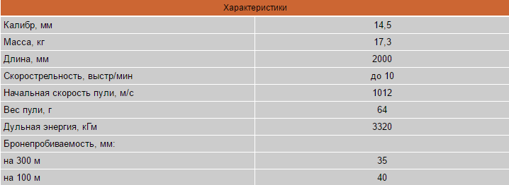

Противотанковое ружье Дегтярева
ПТРД (Противотанковое ружье Дегтярева) Образца 1941 г. Калибр 14,5-мм
К работе над созданием противотанковых ружей В.А. Дегтярёв и С.Г. Симонов были привлечены в начале июля 1941 г. Рабочие проекты ПТР и опытные образцы выполнялись практически одновременно. Помогал работе и опыт, накопленный в СССР в 1936-1938 гг., когда были спроектированы и испытаны 15 моделей различных противотанковых ружей. Одно из которых, Н.В. Рукавишникова (самозарядное ружье Н. Рукавишникова, делало до 15 выстрелов в минуту, легко переносилось двумя бойцами и пробивало 20-мм цементированную броню с дистанции 500 м. Это ружье было принято на вооружение под названием <14,5-мм противотанковое ружье образца 1939 года>), с октября 1939 по август 1940 г. даже было на вооружении. Здесь уместно напомнить, что отказ от этого грозного оружия заключался не в недостатках самого ПТР, а в ошибочной оценке некоторыми тогдашними военными и политическими руководителями возможностей промышленности фашистской Германии, якобы уже в 1940-1941 гг. способной строить танки с 80-мм бронёй. На деле всё обстояло иначе.
<С первых дней войны мы убедились, какая непростительная ошибка была совершена, - вспоминал много лет спустя бывший нарком вооружения Б. Ванников. - Немецко-фашистские армии наступали с самой разнообразной и далеко не первоклассной техникой, включая трофейные французские танки <Рено> и устаревшие немецкие танки Т-1 и Т-11>. Вот почему 8 июля, всего через две недели после начала войны. Главному Военному Совету было вторично представлено противотанковое ружье Рукавишникова, который дальновидно продолжал совершенствовать свое снятое с вооружения ружье. Но, как ни парадоксально, препятствием для принятия ружья на вооружение послужило его совершенство: превосходя все тогдашние иностранные образцы по боевым и эксплуатационным качествам, оно было слишком сложным по конструкции и дорогим в производстве. А в те дни требовалось как можно больше ружей, как можно проще и как можно дешевле. А главное - они были нужны немедленно. Вот почему тогда же, в июле 1941 года, правительство поручило спроектировать противотанковые ружья двум виднейшим оружейникам - В. Дегтяреву и С. Симонову.
Всего 22 дня затратили В.А. Дегтярёв и С.Г. Симонов на разработку проектов и изготовление опытных образцов. Причём каждый представил их сразу два. В.А. Дегтярёв - магазинные полуавтоматические, а С.Г. Симонов - магазинное самозарядное и однозарядное ручного перезаряжания. Опытные стрельбы показали, что полуавтоматические ПТР вполне работоспособны и пригодны к использованию в войсках. Из-за тугой экстракции гильз и медленного перезаряжания от симоновской <однозарядки> с клиновым затвором пришлось отказаться.
В целях быстрейшего освоения и налаживания серийного производства противотанковых ружей В.А. Дегтярёв один из вариантов переделал в однозарядное ружьё. Оно стало проще, технологичнее и дешевле. Противотанковое ружьё В.А. Дегтярёва (ПТРД) представляло собой систему с ручным заряжанием и автоматическим открыванием затвора, что повышало скорострельность и улучшало извлечение стреляных гильз.
ПТРД-41 в момент автоматического эжектирования стреляной гильзы вниз. Копир, при ударе о который открывается затвор при ходе ствола назад
Энергия отдачи при коротком ходе ствола обеспечивала автоматическое открывание затвора и извлечение гильзы. Откатываясь после выстрела назад, сцепленные между собой ствол и затвор некоторое время двигались вместе. Потом затвор набегал на копир, скошенный металлический прямоугольник, приваренный к трубке плечевого упора, поворачивался вокруг своей оси влево, расцепляясь при этом со стволом. Далее двигаясь по инерции, затвор обеспечивал извлечение стреляной гильзы из патронника и отражение её из ствольной коробки вниз.
Чтобы уменьшить воздействие отдачи на стрелка, на ствол был одет дульный тормоз и смонтирован пружинный амортизатор в плечевом упоре. На ПТРД стоял простой открытый перекидной прицел на две дистанции 400 и 1000 м. Для переноски ружья на небольшие расстояния, например, в бою при смене позиции, служила рукоятка, надетая на ствол.
Ведение огня из противотанкового ружья производилось 14,5х114-мм патронами с бронебойно-зажигательными пулями двух типов - со стальным калёным сердечником Б-32 и металлокерамическим сердечником БС-41. Пуля БС-41 обладала большей бронепробиваемостью и использовалась для стрельбы только по танкам. Обе имели хорошее зажигательное действие. Постановлением Государственного комитета обороны от 29 августа 1941 года противотанковое ружьё В.А. Дегтярёва было принято на вооружение Красной Армии. В октябре была выпущена первая установочная партия <бронебоек> В.А. Дегтярёва. В 1942 г. наша промышленность дала фронту уже 184 800 ПТРД.
